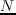
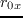
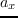

Next: Crosstalk Modelling Up: DSL System Architecture Previous: DSL System Architecture Contents
Simulation in this case involves the generation of a cross-talk gain (XTGXTGCross Talk Gain) matrix for an -line network for each of its  operating channels. This XTG matrix will then be used by the management algorithms to assess the 'cost' or indeed viability of a particular bit-load on a particular line on a particular channel.
operating channels. This XTG matrix will then be used by the management algorithms to assess the 'cost' or indeed viability of a particular bit-load on a particular line on a particular channel.
As such it is important to understand the electromagnetic transmission characteristics of twisted pair phone lines. This area is largely concerned with the generation of per-line-per-channel transfer functions for interacting sections within a bundle. It is shown in Thomas Starr (1999) that for standard (Category 3) lines, the following RLCG characterisation is stable up to the 30MHz area, at which point this 'simplified' characterisation veers away from real-world performance due to high-frequency envelope shearing. Category 5 lines are stable with this kind of characterisation up to around 150MHz.
RLCG Characterisation is derived from the per-unit-length two-port model shown in figure 3, which can be viewed as a infinitesimally small section of a segment of transmission line. The RCLG parameters represent Resistance, Inductance, Capacitance and Conductance per unit length of line. The direct gain channel models used in this report are based on the long line approximations taken from Alastair McKinley (2009), which in turn were taken from Thomas Starr (1999).
This assumption is that (for a long DSL line) the input line impedance matches the characteristic impedance . Given that assumption as well as;
The transfer function for a given DSL line is;
To ensure that this modelled transfer function is smooth with respect to frequency 2.3, the RLCG values are parametrised thus;
Where  is the DC resistance of copper (c) and steel (s) and  are skin effect related constants
Where are low (0) and high () frequency inductance and and define the transition from low to high frequencies.
and define the transition from low to high frequencies.
Where represent contact () and other () capacitances, chosen from measurements.
Where represent () conductances, chosen from measurements.
Within this project, as in Alastair McKinley (2009), AWG 24 line parameters were used, shown in table 4.
Using these parameters, figure 5 shows the gain-curve for a variety of lengths of AWG24 cabling produced from equation (2.2)
Andrew Bolster 2011-05-22